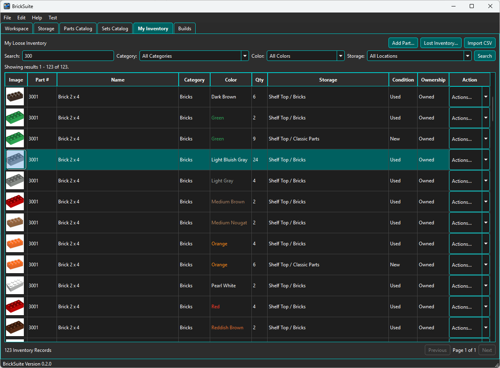
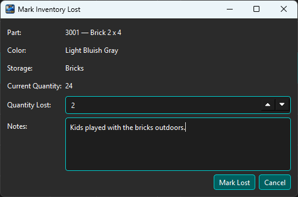
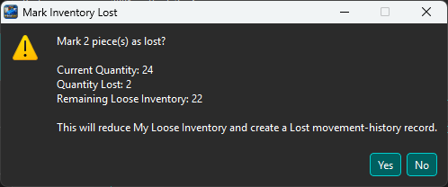
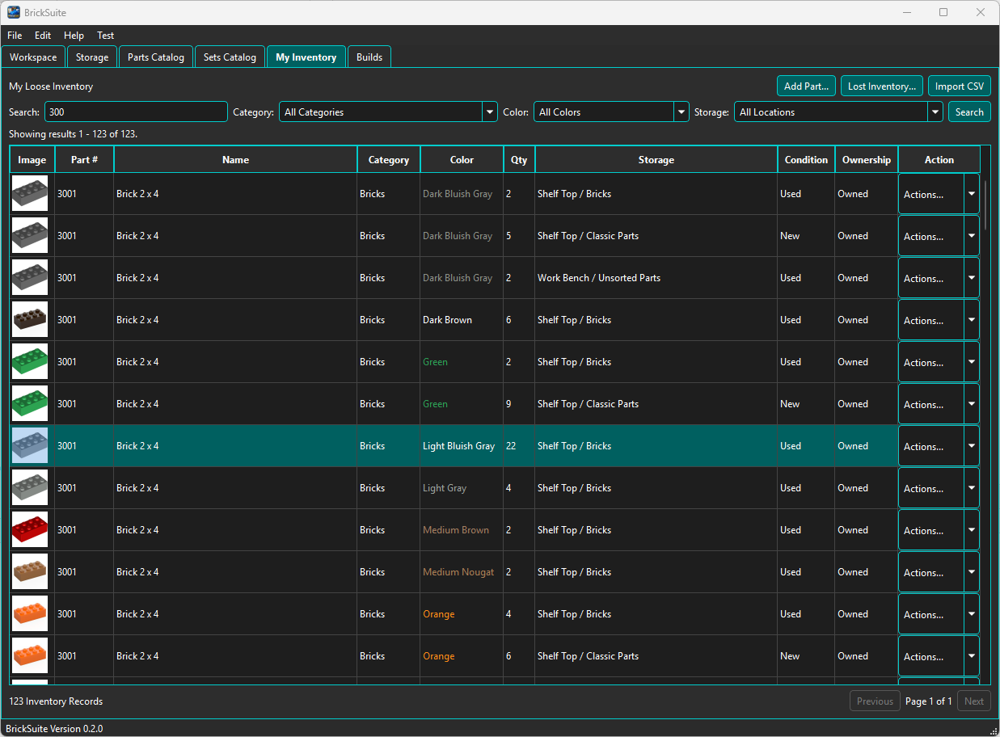
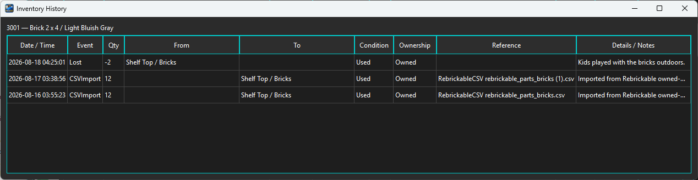

The Lost/Found workflow keeps BrickSuite synchronized with the physical workshop when a piece that should be in loose inventory cannot be located. Instead of silently editing or deleting the quantity, BrickSuite records the loss so the inventory change remains traceable.
In this example, My Inventory contains 24 used, owned 3001 — Brick 2 x 4 / Light Bluish Gray pieces in Shelf Top / Bricks.

The database says 24 pieces are present. If a physical count shows that two of those pieces cannot be located, use Lost Inventory... rather than manually changing the inventory quantity.
Choose Lost Inventory..., select the inventory record, and enter the quantity that cannot be found. Add a note when it will help explain the loss later.

Here, two Light Bluish Gray 3001 bricks are being reported lost from the Bricks Storage location. The current quantity is 24, and the note records that the bricks had been played with outdoors.
Before committing the loss, BrickSuite summarizes the effect of the operation.

The confirmation shows:
It also states that the operation will reduce My Loose Inventory and create a Lost movement-history record. Choose Yes only after confirming that the quantity matches the physical discrepancy.

After the loss is recorded, the same inventory record now contains 22 pieces instead of 24. The two missing pieces are no longer counted as available loose inventory.
This is the important digital-twin correction: BrickSuite now agrees with the quantity that can actually be accounted for in the physical Storage location.
Choose History for the part/color to review the event.

The example history records a Lost event with quantity -2, the source Storage location Shelf Top / Bricks, Condition Used, Ownership Owned, and the note entered when the loss was reported.
The earlier CSV import records remain in the same history, so the inventory's lifecycle is preserved rather than replaced by an unexplained quantity adjustment.
If previously lost inventory is later recovered, use BrickSuite's Found/Return workflow rather than treating the piece as a new purchase or unrelated inventory addition. Returning it through the Lost/Found workflow preserves the relationship between the earlier loss and the recovered physical piece.
The most recent valid location from the Lost record is the first-choice Return To destination. If it is unavailable, BrickSuite can use the last successful destination remembered for that workspace during the current session. Only a successful return updates this session default.
After the return is recorded, verify the resulting loose-inventory quantity and use Inventory History to review the lifecycle record.
Inventory says the piece exists
|
Physical piece cannot be located
|
Mark Lost
|
Loose inventory quantity is reduced
and the loss is recorded in History
|
Piece is later recovered
|
Found / Return
|
Piece returns to loose inventory
while its lifecycle remains traceable
The purpose is not merely to adjust a number. Lost/Found records the reason the digital inventory changed so BrickSuite can continue to represent the physical workshop accurately.
If inventory expected for a Build cannot be physically located, preserving the loss is especially useful because the piece may have been expected by an allocation or other Build workflow. Correcting the loose-inventory state helps prevent later workflows from relying on a piece that is not actually present.
After inventory changes, review the affected Build and use its normal allocation and Missing Parts workflows as appropriate.
Lost/Found remains separate from Correct Entry or Remove Entry. Use it when pieces are physically missing and may later be found. Returning pieces preserves their provenance and requires a valid active Inventory-capable leaf destination.